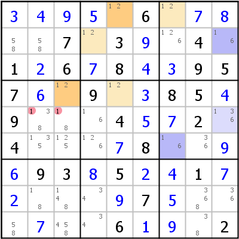

HoDoKu Solving Technique Index: Example for "Multi Colors"

Original sudoku:
.....6.....7.3..4.1.6.8..957..9..85.9...4..2.4....8....93.5..1......7.......6...2
Use the following line if you want to load the sudoku in HoDoKu:
:0501:1:+3+4+9+5.6.+7+8..7.3+9.4.1+26+78+4+3957+6.9.+385+49...4+5+72.4...+78..+9+693+85+2+41+7+2...+97+5...+7..6+1+9.2::152 153:
The following representation can be pasted in most Sudoku programs:
.--------------.------------.---------------. | 3 4 9 | 5 12 6 | 12 7 8 | | 58 58 7 | 12 3 9 | 126 4 16 | | 1 2 6 | 7 8 4 | 3 9 5 | :--------------+------------+---------------: | 7 6 12 | 9 12 3 | 8 5 4 | | 9 138 18 | 16 4 5 | 7 2 136 | | 4 135 125 | 126 7 8 | 16 36 9 | :--------------+------------+---------------: | 6 9 3 | 8 5 2 | 4 1 7 | | 2 18 148 | 34 9 7 | 5 368 36 | | 58 7 458 | 34 6 1 | 9 38 2 | '--------------'------------'---------------'
Representation of the step:
.----------------.------------.---------------. | 3 4 9 | 5 12 6 | 12 7 8 | | 58 58 7 | 12 3 9 | 126 4 16 | | 1 2 6 | 7 8 4 | 3 9 5 | :----------------+------------+---------------: | 7 6 12 | 9 12 3 | 8 5 4 | | 9 -138 -18 | 16 4 5 | 7 2 136 | | 4 135 125 | 126 7 8 | 16 36 9 | :----------------+------------+---------------: | 6 9 3 | 8 5 2 | 4 1 7 | | 2 18 148 | 34 9 7 | 5 368 36 | | 58 7 458 | 34 6 1 | 9 38 2 | '----------------'------------'---------------' Multi Colors: 1 (r1c5,r4c3) / (r1c7,r2c4,r4c5), (r2c9,r6c7) / (r5c9) => r5c23<>1
Copyright © 2008-12 by Bernhard Hobiger
Last modified on May 5, 2025 by shorty#3746
(based of the 1to9only Github repo)
All material on this page is licensed under the GNU FDLv1.3.